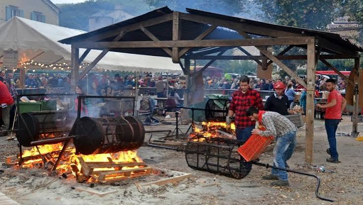

Fête de la
Châtaigne
de Saint-PonsSaint-Pons-de-Thomières : le fruit de l'automne à l'honneur en Haut-Languedoc


⟹ Fêtes & traditions ⟸
Porte d'entrée du Parc naturel régional du Haut-Languedoc, Saint-Pons-de-Thomières est une ancienne cité épiscopale : un évêché y fut créé en 1318 par le pape Jean XXII, à partir d'une abbaye bénédictine fondée en 936 par Raymond Pons, comte de Toulouse. La ville conserve de cette histoire une cathédrale classée monument national, un lacis de ruelles médiévales le long du Jaur, et la source de cette rivière, considérée depuis l'Antiquité comme un lieu sacré.

Mais c'est un autre patrimoine, plus discret, qui rythme la vie du village chaque automne : celui de la châtaigne. Sur les pentes boisées des monts de l'Espinouse et du Somail qui dominent la ville, le châtaignier a longtemps été un véritable « arbre à pain », nourrissant les familles de ce Haut-Languedoc montagneux quand les cultures céréalières se faisaient rares sur ces terres pentues et schisteuses.
Une fête née en 1977, par la volonté d'un groupe folklorique. C'est pour raviver cette mémoire rurale et occitane que naît, en octobre 1977, la Fête de la Châtaigne de Saint-Pons-de-Thomières, à l'initiative du groupe folklorique « Los Castanhaires dal Somal » — en occitan, « les ramasseurs de châtaignes du Somail ». Son nom même est un hommage direct au geste ancestral de la cueillette des châtaignes dans les forêts environnantes.
Près de cinquante ans plus tard, la fête est aujourd'hui organisée par le comité des fêtes local, « Les Tamarous », qui perpétue chaque année, le dernier ou l'avant-dernier week-end d'octobre, ce rendez-vous devenu l'un des temps forts de l'agenda du Haut-Languedoc. Chaque édition se pare d'un thème renouvelé — en 2015 par exemple, « De l'arbre au sabot » mettait à l'honneur le travail du bois sous toutes ses formes.
Nées d'un hommage occitan aux ramasseurs de châtaignes du Somail, les rues de Saint-Pons se parent chaque automne des couleurs et des odeurs de la châtaigne grillée.
— Synthèse historique — L'Âme des RégionsLe cœur battant de la fête se tient Place du Foiralet, où de grands rouleaux tournent sans relâche au-dessus des feux de bois pour griller les châtaignes, aussitôt servies dans leur cornet de papier traditionnel. Tout autour, les ruelles du centre historique, dominées par la cathédrale, se couvrent des étals d'un grand marché de producteurs et d'artisans.
Sur la Place de l'Évêché, au pied de la cathédrale, de vieux métiers reprennent vie le temps du week-end : sabotier, maréchal-ferrant, vannier, ainsi que de jeunes apprentis venus démontrer leur savoir-faire. La Place du Foirail accueille de son côté les métiers de la forêt, avec notamment des démonstrations de débardage à cheval, tandis que les berges de l'Aguze, l'un des cours d'eau qui traverse la commune, servent de cadre à des spectacles de fauconnerie en vol libre.
Le tout se déploie dans un cadre naturel remarquable : Saint-Pons-de-Thomières est en effet une commune du Parc naturel régional du Haut-Languedoc, entourée de forêts de châtaigniers qui virent, à la même période de l'année, aux couleurs rousses de l'automne.
L'identité de la fête tient d'abord à ses racines occitanes : née d'un groupe folklorique portant fièrement un nom en langue d'oc, elle continue de faire vivre, presque cinquante ans plus tard, le souvenir d'une économie montagnarde bâtie sur le châtaignier. Chaque édition renouvelle son thème — bois et sabot, métiers de la forêt, patrimoine rural — pour éviter que la fête ne se fige en simple foire gourmande.
L'ambiance doit également beaucoup à son organisation résolument bénévole et intergénérationnelle : le comité des fêtes « Les Tamarous » orchestre deux jours entiers d'animations, entouré d'associations locales, d'artisans et de jeunes apprentis, dans une ville dont la population reste modeste — un peu plus de mille cinq cents habitants — mais qui accueille chaque année plusieurs milliers de visiteurs venus de tout le Haut-Languedoc et au-delà.
Entre l'odeur des châtaignes grillées, les rouleaux qui tournent sans cesse au-dessus des braises, les fanfares dans les ruelles médiévales et les rapaces survolant l'Aguze, la fête offre une immersion sensorielle complète dans l'identité rurale et forestière du Haut-Languedoc.